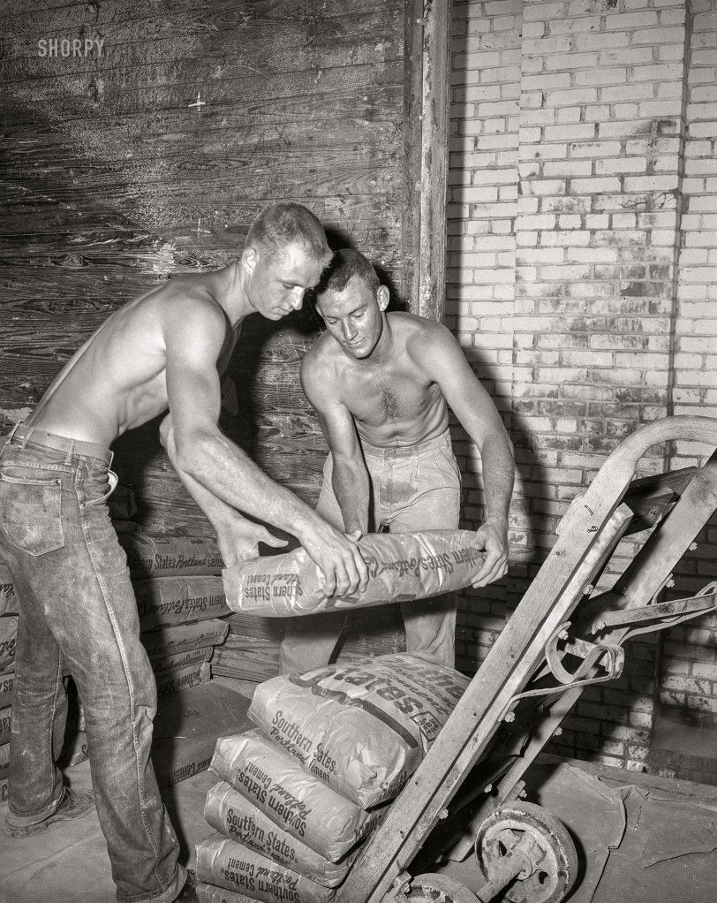
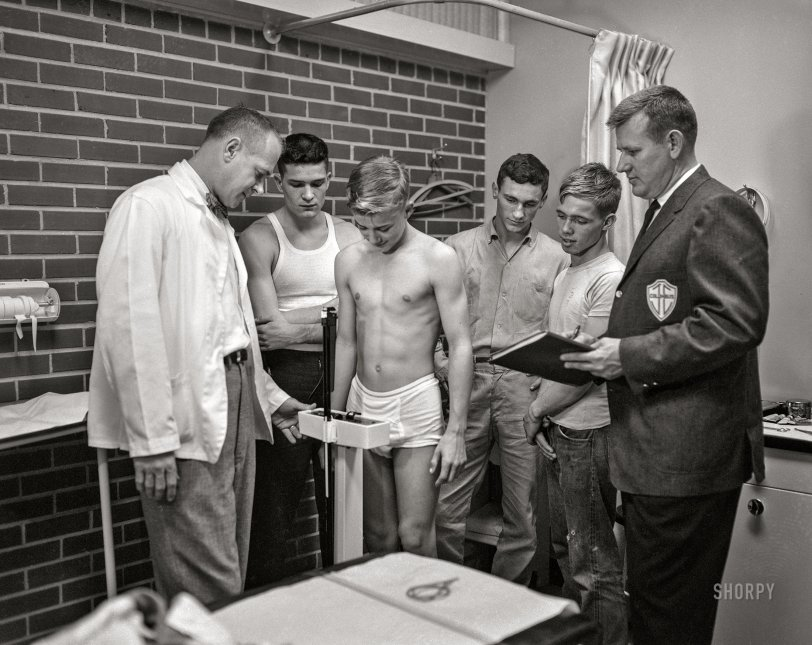
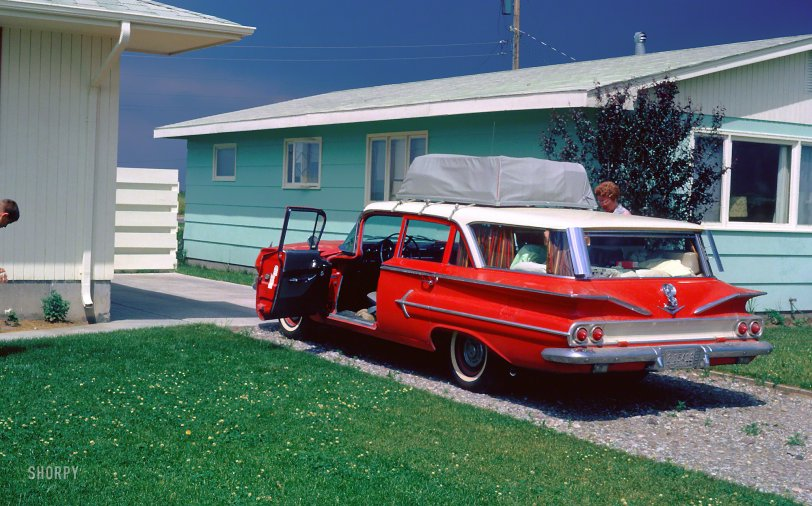
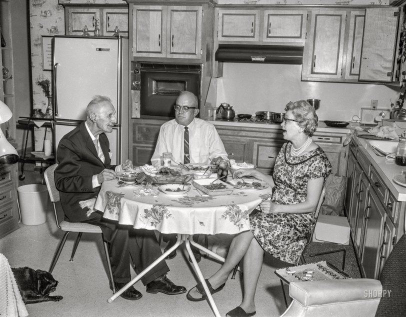
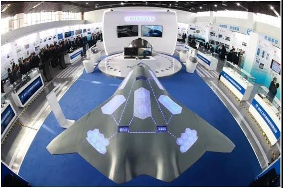
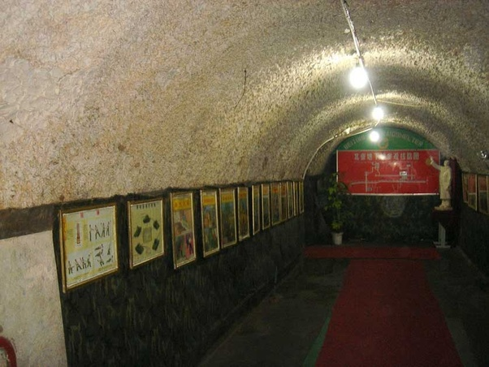

Disclosure/Classified: This Man Went Missing After Creating A Single Reddit Post
This is a really great listen.
From the late 2000s to the mid-2010s, I worked as a molecular biologist for a national security contractor in a program to study Exo-Biospheric-Organisms (EBO). I will share with you a lot of information on this subject. Feel free to ask questions or ask for clarification.
This man went missing after a single Reddit post.
Very few Reddit posts have sparked as many questions and theories as the one authored by the molecular biologist who claimed to have worked on Exo-Biospheric Organisms.
The sheer depth of detail in the post, combined with the author’s apparent expertise and use of precise scientific terminology, captivated not only casual readers but also professionals in related fields.
1) 1.28 Sub-contractor study. Correct. The research was outsourced from USA DOD Gov.
2) 2.00 “Chimera” = many of the so called ‘Greys’ are biological constructs as I have said.
3) 6.50 Location of research identified. (Note. The visuals of the piece are irrelevant fiction).
4) 7.20 BSL 3 and BSL 2 Facility is underground as also reported by other sources before.
5) 7.30 Storage of bodies is at – 80 c. (normal parameter).
6) 7.45 Controlled environment. I too have worked under such conditions (normal).
7) 7.55 ET Pilots are victims of crash situation. Consistent with ‘Snatch’ recovery protocol.
8) 8.10 Cell cultures are grown. Hence in theory a body or organ could be ‘grown’ again.
9) 9.20 Clear a long history of human/ET DNA cross breeding or genetic engineering.
10) 9.45 Historically previous separation of environments of development, suggest they may have originated at some time from an Earth/Mars ecology but taken different evolutionary pathways to the present related but diverse configuration. Many Earth cultures were advanced.
11) 10.10 They can interbreed with humans.
12) 10.25 Normal procreation not possible. In interbreeding genetic IVA is necessary to bring on, hence the known foetus growing chambers as witnessed many times by abductees.
13) 10.58 Radiation buffers useful if working in a partially radiated zone or ‘craft’.
14) 11.30 Highly stripped down DNA for maximum efficiency indicates way ahead of humans.
15) 11.50 Totally genetically engineered bodies.
16) 13.20 Highly organised DNA – however built this knows what they are doing for light years.
17) 14.00 Genetic interaction at foetal development so the bodies are system designed to purpose. They can ‘make’ any creature they need for a given targeted purpose in domain.
18) 14.40 There could likely be twins or clones as seen many times in ET contact. They look alike and of any one ‘individual’ there could be a number, or even a large number (“I Robot”).
19) 15.30 Genes from humans/animals and ET, hence the ‘strange harvests’ of Earth animals.
20) EPIG 11 could indicate it may be possible to reproduce such a body in an Earth lab?
21) 17.35 Bovine serum mentioned. Hence the cows acquired by ET in the USA and body parts.
22) 18.00 Look like the ‘greys’ as reported.
23) 18.30 The outer layer is like a divers ‘wet suit’ – under which is the actual ‘skin’.
24) 19.00 They don’t ‘shit’, they sweat. Some greys have been noted to ‘stink’ sometimes.
25) 19.20 No teeth. They don’t ‘eat’. You are not going to be ‘eaton’ by an ET.
26) 18.40 They may not have a sense of smell like humans?
27) 19.00 The airway arrangement is different may be somewhat like a cat (speculative?).
28) 20.00 They wear contact lens ‘sunglasses’ and we know they are sensitive to UV light.
The home origin environment is likely at a much lower light level than on Earth as they have ‘night vision’ and tend to operate on Earth at night. You could say in Earth terms nocturnal.
29) 20.10 Suggests the home environment is constantly lit, no night time, possible twin stars.
30) 20.40 They see colour differently to humans and with a wider spectrum.
31) 21.00 Hearing ranges into low frequencies, like some Owls and Elephants and Whales.
32) 21.10 Four brain zones as I have always said.
33) 21.30 Bigger brain and better supplied with nutrients. They are smarter than humans.
34) 21.40 Their brains interact directly with their technology, an evolution of ‘heads up’.
35) 22.00 They don’t audibly ‘speak’.
36) 22.20 No naval. They are not brought on in a biological womb. They are cultured in vitro.
37) 22.30 Simpler bu similar hands to humans and they have ‘fingerprints’ (circles).
38) 23.00 Feet show a greatly evolved time line. You could say the feet are slightly pig like.
39) 23.10 Indications they live in a lower gravity or sometimes gravity free space. Weaker body.
40) 23.50 Indictions the beings examined were very ‘old’ – much older than human lives.
41) 24.00 They breath oxygen. The lungs are similar to birds and may indicate a dinosaur connection historically. Question? Where would dinosaurs be if they had not been exterminated?
42) 24.10 They need higher oxygen brain support and ETs have been seen to use breathing support tubes when in an Earth environment. Their brains use more oxygen than humans.
43) 24.20 They vocalise if they do by purring and may have sounds more like cats.
44) 25,20 The heart has similarity to humans but the efficiency of the blood is higher and the body is more ‘electric’ in neurological voltages.
45) 26.40 They excrete via the pores of their arms and legs. The skin of the ‘body’ may absorb nutrients as ETs have been observed to ‘bath’ in shallow vats of enzymes. Obtained from animals (and humans sometimes), also algae and sea life. They take showers of ‘broth’ to feed.
46) 27.40 They don’t ‘eat’ as such like we do and they do not have the same sensory taste .
47) 29.00 Food – ‘broth’ is rich in sugar and protein and may be not only taken but ‘absorbed’ via the skin of the body?
48) 29.45 They have an immune system but cannot easily adapt to new viral infections (The death of the invaders in ‘War of The Worlds’ book/film).
49) 29.55 The body may have micro mechanical machines in maintenance functions (bio bots).
50) 31.20 They understand the ‘soul’ is a field like a gravimetric field and they can translate this field from one ‘body’ to another. They never die in an intellectual form. Neither do humans.
51) Evolution of the intellect is magnified by group activity. ETs always operate in groups of two, three, six or nine and inter respond with each other. They rarely operate singularly.
52) 32.00 This is similar to the ‘Jung’ concept of the ‘oversoul’ the total mind field of a species.
53) 32.50 Some speculation here not born out by experience and observations. The overall motivation of the ETs is the expansion of complexity and seeking matrix evolvement (The Borg) in that respect they may view the Earth and humans as useful source of both DNA, cultural diversity and emotional experience as their somewhat ‘hive’ mentality may be fascinated by the human civilisation but they don’t see the investment into individual ego (Trump) as of value to the whole body of consciousness – as Forrestal asked, “Are they Communists?” – Yes.
54) 36.00 The attempts to suppress the above information seems to be driven by the US need to gain some military or economic advantage from learning from the many years of research that has produced this report, however the rather paranoid mentality of the USA culture is further restricted by religious prejudice within the the elected members who fear that such matters beyond their ken originates from, ‘The work of the Devil’ similar to medieval thought.
55) However ET seems more concerned with using Earth as a test tube or culture pallet and advancing their own evolution by cherry picking what they need from us and the ecology.
56) From previous experience it is obvious that ET will NOT allow their test tube to be destroyed by human nuclear destruction on a Worldwide level even if some 2000 tests have been conducted in the past 79 years.
60) The Genie is out of the bottle and cannot be put back in. As the author of the report states the longer the disclosure of the above facts is withheld from the public the worse the ‘blowback’ could be and the potential complete loss of faith by people in their governments.
61) In closing the above research was within a Special Access Program (USA) and is not within the general oversight of Congress or even The White House at this time.
Ends.
What was your strangest experience in an American ghetto?
When my father finished his PhD in the mid-60s, he and my mother took a six-week road trip from Canada to Mexico with some friends and me, their two-year-old daughter. Needless to say, these are not my memories.
Somewhere in the deep south of the US, they decided that they needed to do laundry. They drove around until they found a laundromat in a rather rundown area, and in we went.
Everyone else there was black. Conversations stopped abruptly as three pale Canadians walked in. Everyone stared at my parents, and they stared back. It wasn’t a welcoming vibe. The mid-60s weren’t a great time for race relations, and my father remembers wondering, rather worried, what was going to happen next and if we should leave.
Only two people in the laundromat didn’t give a hoot about skin colour: me and another toddler. We made a beeline for one another and promptly sat down on the floor to play. My parents report that all eyes went to the little white girl playing happily with the little black boy, both completely oblivious to the tension around them.
And the tension was gone. Smiles broke out, everyone’s laundry got done, and there were many amicable conversations as both groups met new friends.
We should all be as open-hearted and colour-blind as toddlers.
Stuffed Meatballs
(Albondigas en Salsa de Chipotle)
Ingredients
- 2 large eggs
- 1 teaspoon salt
- 1/3 cup fine dry breadcrumbs
- 1 1/2 pounds lean ground beef
- 1/2 pound ground pork
- 1/4 cup coarsely chopped fresh cilantro
- 9 (3/4-inch) cubes queso fresco
- 9 whole pimento-stuffed green olives
- 2 tablespoons lard or vegetable oil
- 1 cup finely chopped white onion
- 2 cloves garlic, minced
- 1 (1 pound) can whole peeled tomatoes, undrained, coarsely chopped
- 1/2 cup beef stock or broth
- 2 to 4 canned chipotle chiles in adobo sauce, finely chopped
- Sliced pimento-stuffed olives
Instructions
- Beat eggs with salt in large bowl. Stir in breadcrumbs; let stand for 5 minutes.
- Add beef, pork and cilantro; mix lightly but thoroughly. Divide meat mixture into 18 even portions. Shape 1 portion into flat patty; top with 1 cheese cube. Press meat firmly around cheese to enclose completely and form ball.
- Repeat procedure, stuffing 1/2 of meat portions with cheese and 1/2 with whole olives.
- Heat lard or oil in deep 10 inch skillet over medium heat until hot. Fry 1/2 of meatballs at a time, turning occasionally, until brown on all sides, about 5 minutes; remove to plate.
- Remove and discard all but 3 tablespoons drippings from skillet. Add onion and garlic; sauté over medium heat until soft, about 4 minutes.
- Stir in tomatoes, stock and chiles; heat to boiling.
- Return meatballs to skillet; reduce heat to low. Simmer, covered, until meatballs are cooked through, about 45 minutes.
- Remove meatballs to serving dish with slotted spoon; keep warm.
- Transfer tomato mixture to blender container; process until smooth.
- Return mixture to skillet; heat over high heat to boiling.
- Pour sauce over and around meatballs.
- Serve with sliced olives.
Which innocent first glance photo actually has a really sad story behind it?
A group of thirteen years old girls went camping in America in July 1945. They swam at a river in Ruidoso, New Mexico. The girl in front of the picture is called Barbara Kent. What the girls did not know is that nearby, the Manhattan Project detonated a nuclear bomb as a test…
In an article, Kent described what happened that day:
“We were all just shocked … and then, all of a sudden, there was this big cloud overhead, and lights in the sky,” Kent recalls. “It even hurt our eyes when we looked up. The whole sky turned strange. It was as if the sun came out tremendous.” A few hours later, she says, white flakes began to fall from above. Excited, the girls put on their bathing suits and, amid the flurries, began playing in the river. “We were grabbing all of this white, which we thought was snow, and we were putting it all over our faces,” Kent says. “But the strange thing, instead of being cold like snow, it was hot. And we all thought, ‘Well, the reason it’s hot is because it’s summer.’ We were just 13 years old.”
The flakes were fallout from the Manhattan Project’s Trinity test, the world’s first atomic bomb detonation. It took place at 5:29 a.m. local time atop a hundred-foot steel tower 40 miles away at the Alamogordo Bombing and Gunnery Range, in Jornada del Muerto valley. The site had been selected in part for its supposed isolation. In reality, thousands of people were within a 40-mile radius, some as close as 12 miles away. Yet those living near the bomb site weren’t warned of the test. Nor were they evacuated beforehand or afterward, even as radioactive fallout continued to drop for days…
Barbara Kent and all her friends developed cancer. Every single one of the girls you see in that photo, died before the age of thirty. The only one who lived longer was Kent. And she, too, developed and survived several bouts of cancer. People often forget of the heavy price paid not only by those the atomic bombs were dropped on in Japan, but even by those who lived nearby as they were first developed.
Yellen; U.S. Gives Away Seized Russian Assets, “Sorry” Over $15 Trillion Debt Increase
This bodes a difficult time for the new Trump administration.
Alien
Submitted into Contest #24 in response to: Write a story set in the dark recesses of space where the two main characters are often at odds with each other in humorous and comedic ways.… view prompt
Ash Brinton
“Every day.”
“I can’t believe I’m actually talking to a human. A real, live human! My grandmama says she went to Mars once. It’s the closest she ever got – the closest any of us ever got – to Earth. There was this weird thing that my mama calls a-” he said something in a different language “-but I don’t think there’s a word for it in Human, so the translator might not work for it. It was made of panels and metal with a human word written on the side in big block letters. The first letter looked like a wide mouth getting ready to eat you, grandmama says.”
I tilted my head, trying to imagine what he meant. “An ‘O’?”
“What’s an ‘O’?”
“The letter. It looks like this,” I traced my finger through dust on the small table between us.
The alien child shrugged, “Maybe. I wasn’t there. Grandmama says you could see Earth from where she was and it was all greens and blues and browns and whites and when it wasn’t facing the star, the land glowed. It even had a tiny metal moon orbiting it!” The little alien boy put his hands on my knees to pull himself into a standing position.
“Earth only has one moon and that’s made of rock, but your grandmama may have seen a satellite. And the land wasn’t glowing, silly.” I chuckled, flicking the little curl on the top of their head that seemed to be the defining factor of their species, “That was the lights in the cities and houses.”
“Why would you need lights? You have a star right there in your solar system!”
“The lights are for at night, when the sun goes down.”
“What’s a sun?”
“It’s what we call our star,” I explained.
The alien’s eyes grew wide, “Your star moves?”
“No.” I said flatly, “When Earth rotates, it looks like the sun is moving across the sky. Thousands of years ago, people thought it was moving. They thought that Earth was the center of the universe.”
The alien snorted, “That’s kind of self-absorbed.”
“Yeah,” I laughed, “but science proved them wrong. When the part of the Earth that we are standing on turns away from the sun and it goes dark, we say the sun goes down. We call that time night. That’s when we can see the moon and the stars up in the sky. Do you have that on your planet?”
“No. There’s two stars, one on either side of my birth planet, so it’s always not-night.”
“Day. The word you’re looking for is day.”
“Wow. Humans name everything, huh. What do you call your moon?”
“Well, technically the moon’s name is Luna, but there’s only one, so we just call it the moon most of the time.”
“Cool!” He exclaimed, “We don’t have a sky. Mama says the atmosphere’s too weak for us to have a pretty sky like the one on Earth.”
“Light pollution blocks most of the sky nowadays, so don’t be disappointed if you ever see it.”
“Mama and Grandmama have always wanted to go to Earth. They were so excited when you got to the end of your solar system. We’ve been watching you progress for a while. Mama said humans were resilient and stubborn and would never give up, but Papa thought you were going to give up because you kept finding rocks and that was it.”
“They were cool rocks,” I nudged him, “Space rocks.”
The alien clapped two of his arms together, which I was quickly learning was how this species showed delight.
I hated to burst the alien’s bubble of innocence and wonder but…
“Do you know the worst thing about Earth and living there?”
The child’s face dropped and the spiky arm-like appendages fell to their side.
I continued, “The worst part about living on Earth, or at least in my country, isn’t the pollution, poverty, hunger, or even abuse. It’s the tension. The fear that we’ve entrusted the keys of mass destruction to a lunatic or a villain. The constant worry that one day you’ll turn on the tv and hear that a war has broken out in our country and a nuclear bomb has been dropped. In my country, we are always at war, but it is always pushed under the rug and ignored. For stuff like that to be shown on the news, it would have to be on our own soil. Either a civil war or a world war. It would destroy anything. No one would survive, and if they did… that fate might be even worse.”
“So… you don’t want to go back to Earth?”
I shrugged helplessly, “Humanity destroyed Earth. Maybe when your grandmama saw it, Earth was more beautiful, more loving, more kind, but more likely is that the effects of humanity’s cruelty were only just starting to show on Earth’s surface and it wasn’t as noticeable yet. To truly see Earth, you have to get up close, beneath the clouds, into the cities. Still… I do want to go home. I want to rebuild and restore Earth to its former glory, if it ever had any when humanity lived on the Earth. I want to see the animals, healthy and thriving, not on the brink of extinction, and to see the moon surrounded by stars, and see the milky way hovering in the sky like it did when my grandparents were little. I want to go home.”
“Can I help?”
“I don’t think so, little friend. It’s not fair to pull you into our mess.”
“So? I want to see Earth too! I want to help the humanities.”
I smiled sadly and patted the alien’s baby curl. “Let’s just get me home first. Just imagine being the first of your species to reach Earth’s surface. Your mama will be so proud.”
I looked out the small window at the wide expanse of nothing, with stars twinkling in the distance, almost too far away to see.
“Let’s go home.”
Why is the assassination of UnitedHealthcare’s wealthy CEO Brian Thompson receiving very little sympathy from American citizens?
Four years ago, I had UHC insurance through my work.
I was doing some work in my yard, tearing down an old shed. In the process, I got a pretty long scratch on my arm from a rusty nail. I looked at it, concluded it probably didn’t need stitches but since I couldn’t recall when I last got a tetanus shot and tetanus is kinda, um, fatal, I considered my options.
There is a promptcare clinic within walking distance to my home. I went there and was seen. Their conclusion was the same as mine: no need for stitches, but I should – and did – get a tetanus shot. All seemed completely reasonable, no worries.
A few weeks later, I learned that UHC had denied the claim.
I called in, and was told that it was denied because I got non-emergency services at an emergency provider.
What is an emergency provider? They could not explain. There was no way for me to determine this information. As I was on the phone, I looked into details of my policy: it was silent on the definition of an emergency provider, but was very clear on two points:
First, that all vaccinations were covered 100%. No exceptions. This was explicit in the policy. It did not say where or how one should get the vaccinations: it was not “Covered 100% at in-network facilities” or “With pre-approval”. It said, directly, “All vaccinations are completely covered.”
Second, the instructions given specifically gave my exact scenario: getting a non-life-threatening injury at home. My policy instructed me to do precisely what I had done: go to a promptcare clinic where my injury would be evaluated and treated, and if necessary get a tetanus shot. The policy stated this would cost only the co-pay and would be otherwise completely covered. Again, this was markedly specific; frankly it would have only been slightly more specific if it had used the names of the people involved and the dates it happened. There was no question of applicability.
I mentioned these two passages in the policy to the service rep, who read them and mumbled something about claim codes. My response was that I cannot see or control the claim codes, those are internal to UHC and do not affect the policy. The representative admitted this is so, and said the claim would be approved.
About an hour later I got an email saying the claim was approved. Then half an hour or so later I got an email saying the claim was denied.
I called in again, went through the runaround with another rep. Same ultimate result – yes, the policy says this is covered, mumble about codes, approve it, then it gets denied again.
I kept calling. I escalated. I made a formal complaint. All sorts of things. Eventually, after somewhere upwards of 30 hours on the phone and six months, they covered the vaccine but not the vaccination: basically I wasn’t on the hook for the ~$250 for the vaccine itself, but I had to pay the $86 for the nurse to give me the injection. Ridiculous, but honestly by that time I’d all but given up.
Fortunately for me, the stakes were very low. I would have only been out a few hundred dollars, being a sum I could afford.
However, the policy as written was 100% clear. There was no excuse for that runaround. I should not have had to pay at all [other than the co-pay on the visit]. There was no ambiguity, but nonetheless I got denied, delayed, and finally got less than I should have gotten anyway.
What this made me consider is, if that’s how they handle a low-stakes, cut-and-dried situation, what would they do if it were something serious? What would they do if I was recovering from a car crash or getting cancer treatment? What would they do if the cost were in the hundreds of thousands of dollars and I didn’t have the wherewithal to spend most of a week on the phone? What would they do if the policy had any ambiguity at all?
I don’t think it’s much of a leap to realize that this is a company which makes decisions that determine life and death for people, and does it with all the ethics of a sewer rat. And if you choose to run your company that way, well, there’s a predictable outcome for that.
UHC bought the ticket, they get to ride the ride.
Shorpy




Will China likely make two different 6th generation multi role fighter jets, like they have done with making two 5th Gen’s? One land based and one for carrier ops?
It’s rumored that China has produced at least two different 6th gen prototypes, one by Senyang one by Chengdu, and they’re battling it out right now, like the ATF program between the YF-22 and YF-23.
There have been many hints and leaks of concept throughout the past decade.

It’s been 13 years since first flight of the J-20 prototype. We may get a glimpse of the Chinese 6th gen prototype soon.
What are your thoughts on Donald Trump’s statements about trade tariffs hurting US consumers?
Tariff = tax. Tariff on foreign country = increase tax on Americans
There are many reasons why Trump 2.0 imposes high tariff on ALL countries in the world. Below is 1 reason.
The big picture: Elon Musk said US economy is collapsing. Its debts is sky high at $36 tn as of 2024/11. With a skyrocket speed to increase debt from $10 tn in 2008, to $20 tn in 2016, to $36 tn 2024.
USA has 2 deficits: budget deficit (ie overspending) & trade deficit caused by deindustrialisation
With $6.74 tn of bonds (ie 1/6 of total $36 tn) expiring in 2025 + $1.9 tn budget deficit in 2024, USA must borrow & increase US debt by a minimum of $8.64 tn in 2025.
Just paying interest on the debts already costs USA $882 billion in 2024 ie $3 bn per DAY (source: US Treasury Dept). Its debt increases by $8.7 bn per 24 hours. … indeed rocket speed. E.Musk was not joking when he said US is broke.
USA makes tons of $$$ from wars. But wars only benefit MIC & Wall Street. Not USA the country because the rich dont pay tax. Thus USA must rob others thru tariff, regardless allies or not.
Trump 1.0 ended Syrian war. Then illegally occupied Syrian oil field ie rob Syrian oil (80%). Who pockets the Syrian oil money? US gov or MIC? USA robs Iraqi oil too after Iraqi war.
Tariff causes inflation. Without cheap goods from China & Mexico, US inflation will be sky high too.
Yet, Trump 2.0 imposes crazily high tariff on ALL countries = violently rob them to feed USA like a mafia in movies. Because USA is truly broke.
Inside USA, tariff on foreign country = tax increase on Americans because foreign sellers will add (part of) the tariff to the sale price of their exported goods to USA. In Trump 1.0, 90% of tariff was added to the sale price by foreign sellers.
In both Trump 1.0 & 2.0, Trump has & will decrease tax to attract votes. How to recover the loss of revenue incurred from tax decrease? Use tariff to cause inflation so that all Americans pay a bit ie use tariff to disguise tax increase.
We must understand: 60% tariff on Chinese imports & 20% on smaller countries is crazily unreasonable. Not many firms can make 60% of profit. Not even 20% for small firms/countries. Nobody will do business with no profit. Thus, decouple & stop/reduce sale to USA is the only option.
In fact, decoupling may be the plan of Trump 2.0. Trump may want USA to start all over again by manufacturing its own products from toilet paper to Trump’s campaign cap to washer etc. Trump wants everything to be made in USA.
US wage is higher than southeast Asia. That is Made-in-USA is more expensive. Trouble is whether USA will increase the wage to catch up with the inflated consumer products. Otherwise Americans will become poorer.
Trump 1.0 failed to attract US investors back to USA. Some still stayed in China. Some moved from China to, say, Thailand to do a finish touch on the Chinese products. This disguise of made-in-Thailand products also pushes up the American consumer price.
Let us watch Trump 2.0 to roll out.
Jeffrey Sachs on ‘China collapse’ theory
Now that Assad is history, can we send back the 5 million Syrian refugees we hosted in the EU and Britain, or what is the excuse?
I wrote an hour ago before dinner that on Telegram that large numbers of executions have started happening.
Oh they’re totally moderate they just shoot Christians in the head or hang them instead of chopping off their heads!
He’s also moderate because he said so! Nobody would ever lie!
There’s been numerous corroborations of the executions. I still reserve judgement. But looks like MORE refugees which you have to take because you were complicit in destroying their country.
The Useless Pages
A collection of websites that are intentionally useless but often surprisingly entertaining. It’s a fun way to explore the internet’s oddities.
Here’s some of my adventures there…
Pretty useless eh?
*sheech*
What was the strangest cultural thing you have experienced as a foreigner/visitor in the United States?
That it’s just such an appalling place to live. No, really – having lived in different countries I can honestly say that the USA is an appalling place to live.
- Everything is monetised
- Police are ready to shoot you to death at the drop of a hat
- TV is unwatchable due to the ridiculous proliferation of advertisements
- Food is low quality and flavourless (you get to choose between salty or sweet. That’s it)
- Public transport is a joke
- Everything is method of ripping you off
- Politics is hyper polarised.
- The police are simply bullies with no oversight and they do whatever they want including commit crimes
- Infrastructure is a crumbling mess and poses a real danger to the public
- Every town looks the same – a collection of the same fast food joints, stores and strip malls
- Toxic waste is kept in above-ground open-air pools. And when it rains a lot those pools overflow and the toxic waste goes with it. Seriously. Check it out for yourself
- You aren’t seen as a person but as a consumer, with a wallet that needs to be emptied
- The tipping culture is offensively entitled – you are literally expected to just give away your money to stranger for doing the job they’re already paid to do. And if you receive shitty service and decide not to tip, or if you can afford to eat out but not afford to give away your money to a stranger for no reason, *YOU’RE* seen as the bad guy. Entitled narcissistic selfishness like you’ve never seen before
- Not just the vehicles and the houses/buildings, but everything is low quality. It’s like a disposable culture
- The fetishisation of the military and the police force – if somebody chooses to kill strangers for a living it’s bad, but if they’re wearing a uniform while they do it you’re expected to simper and gush and worship them and say “thank you for your service” like a drone
- The amount of their GDP they waste on their military while essential public services like schools and hospitals and fire departments and infrastructure go neglected. This is something banana republics and tinpot dictators do
- The utter lack of concern for their out of control gun problem. Every year 3500+ children are killed with guns and the predominant attitude is “yeah well that’s just a fact of life” when literally no developed nation has this problem, ONLY the USA
- The general complete ignorance about the rest of the planet
- The utter lack of curiosity to learn about the rest of the planet
- The diminishing of the middle class, and the reluctance to acknowledge it
The Sleeping Tiger (1954 Noir-Thriller) with Dirk Bogarde
Why do steaks from restaurants taste so much better than the steaks I make at home?
They are prepared for hours, days or even weeks.
The best tasting steak need not necessarily be the freshest meat. If the meat is frozen or cooled for transportation, it needs to be properly brought back to room temperature.
At home, condensation and melt usually ruins the meat texture.
Meat for grilling or frying have an ideal amount of moisture. Most of the time, raw steak needs to be air-dried, and there are special coolers purpose-built for meat. This can take hours, days or weeks, depending on the aging the chef desires.
A good steak is mainly a matter of controling moisture and heat, but most home cooks do not devote enough time to meat preparation.
Out of the fridge and into the pan is sub-optimal.
And yes. I make a mean steak, and dipping sauce.
China have invited EU envoys to see for themselves the real situation of Xinjiang, but why do they refuse to visit?
For many years, I was an Airbnb provider at the highest level.
At one stage, we had two lovely young ladies staying with us from Xinjiang province.
For those of you who don’t know, it’s a huge province in the far west of the country, sitting above Tibet.
I asked these ladies their opinion of what we were being told about the ill-treatment of the Urghur people and the so-called internment camps; they looked at me as if I was crazy and said, “There aren’t any. One day you must come to our province and see for yourself, it’s lovely”
On another occasion we had another guest from Xinjiang, and she answered that where she lives some Urghur men carry sabre swords and her father forbids her to venture out alone.
I think that this is fairly reasonable.
I have traveled extensively throughout most provinces of China, my husband and I were lone adventures, and over those many years we met many Muslim traders, they are well dispersed all over this mind-blowing country and their presence dates back thousands of years, all this is just a Western media beat up in an attempt to try to bring China down because they are jealous of the rising golden dragon.
Long live Xi Jin Ping, he is doing a great job!
Francine Rizza
Young Gal’s Ultimatum Of No “Lovin” Until Marriage BACKFIRES, Now She’s With An Addict In A Trailer
Blue Moon
Submitted into Contest #24 in response to: Write a story set in the dark recesses of space where the two main characters are often at odds with each other in humorous and comedic ways.… view prompt
John K Adams
Myr sighed again. “Is it dinner time? I know what the clock says, but it doesn’t feel like dinner time. The sun is still out.”
“You know how this works, Myr.”
“Of course I do. I get it intellectually. But a month of sunshine followed by a month of darkness?”
“Actually, it’s more like two weeks.”
“Really? Who came up with that schedule?”
“Uhm… God?”
“I need a break, Dril.”
“What do you say we take a week and go to the Sea of Tranquility? Or to the mountains?”
Myr put her hands up to her ears and shook her head. “No. No. No. No. No.”
Dril passed on this opportunity to, once again, make a joke about American cheese and the flag left behind by the first men to land here.
“Let’s dance.” Dril moved toward Myr with a rhythmic step. He started singing. “Blue Moon… You saw me standing alone…”
Myr shrugged off his embrace. “Don’t you dare start about Kate Smith.”
Dril put his hands up, in frustration and surrender. “I’m trying to make the best of a…”
“Cabin fever. Isn’t that what you call it?”
“On the moon, it is called ‘existential angst’.”
“Thank you, Dr. Freud.”
Dril touched Myr’s elbow. “Come on, Babe. We never look at the earthrise anymore.” He waved his hand and the shaded, domed window automatically brightened. The colorless moonscape spread before them with Earth’s blue orb peeking from behind the distant mountains.
“Stark.”
Dril shook his head. “Look at the Earth, Babe. We’ll be going home before you know it. Think how much you’ll appreciate being back.”
“Are we there yet?”
“You’ve heard that you can’t go home again?”
“Watch me.”
Dril stood back. The moment had passed. “I’m going to go out and check the sensors.” He pointed to the counter stacked with various tools and gizmos. “Would you hand me the razzafraz?”
Myr looked at the disorderly mess Dril called his workbench. She picked up the tool on top of the others. “You mean this?”
“No. That’s the franaham… Next to the thingamajig.” Myr picked up another tool at random and held it up. “Thank you.” He took the tool from her and moved toward the airlock.
“Will you be long?”
“No. You know, routine maintenance. Never can say when some asteroid will wreak havoc on our survival systems.”
“I hate when that happens.”
Dril chuckled and ducked through the bulkhead door. He stepped into his suit, secured the safety devices and donned his helmet. Taking his time, he checked the vid-feed and sound system, a routine as ingrained and natural as brushing his teeth before bed. All systems were a ‘go’.
Not that Myr would be monitoring his progress. Lately, her heart wasn’t in it.
He checked the seals on the interior door and activated the exterior door. The small room filled with steam for a moment as the air froze and then escaped into the void.
Dril scanned the bright horizon. It still quickened him to take in this alien moonscape. It never changed. But he did. Each day, his perception of this perpetually static scene seemed fresh by what he brought to it. The frozen nature of it grounded him somehow.
And of course, he thought of what ‘phase’ they were in. He could never shake the earth-centric perspective. But now, Dril would also note Earth’s phase.
After watching Earth’s rise above the horizon, Dril checked the various monitors distributed around their home base and the outer shell of their home. With few variations, all seemed in order.
He chuckled at his own joke. “The barometer seems stuck. Weird, no air pressure at all.”
When on the frontier of space like this, Dril always celebrated an ordinary day.
Seeing the giant ‘S. O. S’ scrawled in the dust by Myr, always made him smile. That happened after their first few weeks on base.
Dril remembered watching her shuffling around in an aimless manner on the landing pad near their base camp. Or so he thought.
“What are you doing?” he asked.
“Sending a message to anyone who might be paying attention,” she answered.
Then he recognized the letters, wide as Stonehenge. Gigantic letters to be read by someone, anyone above them in the sky.
They read, “S. O. S.” Sans serif.
He knew she meant it. Keeping her morale up kept him busy. That was his hardest job.
~
Myr watched the airlock door shut. Though a daily occurrence, seeing Dril go out distressed her. What if something happened to him?
Of course, she knew all the routines and procedures. But to be alone out here on this rock… She shuddered at the thought. At first, it seemed a romantic adventure. Like being on a desert island together. Dril called it their ‘dessert island’. She never imagined how desolate the whole thing would be.
Myr entered the conservatory. She spent most of her time there. The humidity, greenery, and oxygen-rich air kept her sane. She loved caring for the plants more than anything. They were her life.
She liked the sunshine streaming into the greenhouse. The windows filtered the harsh light to a level the plants could tolerate. And she had artificial light to accommodate the long lunar nights.
Though primarily their source of fresh food, Myr lobbied for authorization to also bring decorative and flowering plants to their outpost. She prevailed by arguing an environment lacking in beauty would be better tended by a robot. Myr insisted ‘practical’ was broader in scope than ‘edible.’ A garden could include a feast for the eye as well as her belly and wouldn’t unduly tax their limited resources.
Myr had maintained even a guinea pig deserves a home and not merely a box filled with hay. Someone agreed and Myr received permission to transport seeds of her choosing, within strict guidelines.
Now she had a garden, her little paradise. But without apples or snakes. She cared for it with a passion.
The apparently spontaneous generation of certain insects and pests amazed Myr. They required constant monitoring, lest they damage the food crops. Myr understood they must have stowed away on the seeds or the soil. They were unwitting aliens on this unwelcoming stone.
Curiously, there were also spiders, who allied with her to maintain a balance within the garden. Life begets life.
She gathered a variety of tomatoes and other ripe vegetables for their dinner.
Indicator lights and a signature chirp told Myr that Dril was back. She felt calmer now and went out to greet him.
Dril already stood in the living zone when Myr entered from the kitchen. He smiled at her and they embraced. However brief his sojourns outside, Dril’s homecoming always caused her joy.
Dril asked her, “Tell me, how do you know when the moon is full?”
“You never think it is full.”
“No. Work with me.”
“Oh, a joke. Uhm… it’s always half empty?”
“No. It says, ‘hold the cheese’.”
Myr did not react. The new joke felt very old.
“How about this…? What flavor is a ‘blue moon’?”
“Dril, I was feeling better…”
“Roquefort!”
“Please?”
“Alright… One of these days I’ll make you laugh.”
Myr shook her head. “When that happens, you’ll know I’ve become a bonafide lunatic.”
They looked at each other for a moment and burst into laughter. They embraced and kissed warmly.
Dril looked into Myr’s eyes. “How do you do that? You always make me laugh.”
“My little secret, love. Let’s eat.”
They walked hand in hand into the kitchen.
Brian COOKS Two Ignorant Girls Who ACCUSED Him Of Misogyny
What defenses does the UK have against being nuked if any at all?
None, the prime minister and the super wealthy have bunkers.
All they have is the Type 45 destroyer which can’t intercept ICBMs.
Trident has shown not to work either.
Meanwhile… Chinese cities have bunker complexes under them.

During the 2023 mega drought many other city bunkers were opened up as heat shelters
How did your marriage end?
Broccoli.
heavily abridged story below because I have no need to relive all this.
My ex was a normal and healthy 5’6” woman when we met at around age 20. Everything was fine. I worked and she Graduated college. She got a great job and the decline began. She was making far more money than me but I was still forced to work full time and go to school. Pretty sure the intent was to keep me unemployable. She took 75% of my pay as “rent” for a house she bought and only put her name on. She wouldn’t really grant me full rights to anything until I graduated college which she was working against. She always had some stupid reason and I was tired from working 40+ hours and going to school.
fast forward a few years. I’m about to finally graduate college. She has ballooned to over 400lbs. I’ve started running half marathons at this point and I’m eating real food. Every Friday night id make a nice dinner for 2. She would get fast food and eat it in front of the TV while I ate alone in the kitchen.
about the time they were cutting toes off her parents for diabetes and I was getting sick of watching everyone check their blood sugar at holidays I asked her to just try one of my prepped meals instead of getting fast food. She was reluctant to eat fresh steamed broccoli with a little butter and some salt on it. After she finally forced it down- she then proceeded to “throw up” for 2 hours.
I went and looked for my own place the next day.
Tijuana Tortilla Stacks
Ingredients
- 1 1/2 pounds ground beef
- 1 (1 1/2 ounce) envelope powdered spaghetti sauce mix
- 1 teaspoon salt
- 1 (1 pound) can tomatoes, cut up
- 1 (8 ounce) can tomato sauce
- 1/2 cup water
- 1 (4 ounce) can green chiles, diced
- 1 pound ricotta cheese
- 2 eggs, lightly beaten
- 8 corn tortillas
- 1 pound Monterey Jack cheese, grated
Instructions
- Heat oven to 350 degrees F.
- Brown beef in a heavy skillet. Add spaghetti sauce mix, salt, tomatoes, tomato sauce, water and green chiles. Blend thoroughly and simmer for 10 minutes.
- In a bowl, combine ricotta cheese with the eggs.
- In a flat 12 x 8 inch baking dish, place about 1 cup of the meat mixture. Place 2 tortillas over the meat, side by side, and spoon some of the ricotta mixture on top of each. Then layer more meat and sprinkle with grated cheese. Repeat until each of the 2 stacks has 4 tortillas, ending with grated cheese.
- Bake for 30 minutes.
- Let stand for about 5 minutes before cutting into pie-shaped wedges.
What are some underrated travel destinations in China beyond Beijing and Shanghai?
What are some underrated travel destinations in China beyond Beijing and Shanghai?
The three most underrated tourist cities in China, with scenery that is as good as popular attractions, but without the crowds!
Release time: 2024-09-02
In the vast land of China, in addition to those well-known popular tourist cities, there are also some seriously underestimated treasures. They may not be as famous as Beijing and Shanghai, but they have unique charm and amazing scenery. Today, let us walk into three underestimated Chinese tourist cities and feel their unknown beauty.
Tengchong Ginkgo Village shows the beauty of golden autumn
Tengchong, located in the western part of Yunnan Province, is a small border town surrounded by volcanoes and hot springs. At the end of November every year, when the golden ginkgo leaves cover the ground, Tengchong becomes a dreamlike golden world. There are more than 10,000 mu of ginkgo forests here, and the oldest ginkgo tree is 1,300 years old. Walking in it, it feels like being in a flowing oil painting.
However, the charm of Tengchong goes far beyond this. The dormant volcano, the surging hot sea, the Beihai wetland with excellent air quality, the peaceful and tranquil Heshun Ancient Town, and the hiking trails deep in the Gaoligong Mountains all make this small city full of endless fun for exploration. What is more worth mentioning is that Tengchong was also an important battlefield of the Chinese Expeditionary Force during the War of Resistance Against Japanese Aggression. The National Cemetery and the Chinese Expeditionary Force Memorial Hall record that magnificent history.
Jianshui Ancient City Shows Rich Cultural Charm
About 200 kilometers south of Kunming, you will arrive at Jianshui, which is known as the “Zou Lu of Southern Yunnan”. This ancient city with a history of more than 1,200 years is one of the few national historical and cultural cities in Yunnan. Walking through it, you will find that there are a large number of ancient buildings from the Ming and Qing dynasties, such as the Confucian Temple and the Zhu Family Garden, all of which demonstrate the rich cultural heritage of this small border city.
The most eye-catching thing in Jianshui is the Chaoyang Tower, which is shaped like Tiananmen Square. Every morning, when the first ray of sunlight shines on the tower, the whole ancient city seems to be coated with a layer of golden light, which is extremely beautiful. In addition, the Seventeen-Arch Bridge outside the city, Jianshui Small Train and other attractions also make this ancient city full of unique charm.
Jingdezhen brings new vitality to ceramic art
When talking about Jingdezhen, many people may think of the image of “the Millennium Porcelain Capital”. However, this ancient city is radiating new vitality. Walking through it, you will find that there are not only traditional ceramic workshops, but also many creative modern art spaces.
The Imperial Kiln Museum and Bingding Chai Kiln are two attractions that cannot be missed. They not only show the long history of Jingdezhen ceramics, but also show how modern artists combine traditional crafts with contemporary art. In addition, the Sculpture Porcelain Factory is now more like a cultural and creative park, and there is also the famous Lotte Market on weekends, where you can find all kinds of interesting ceramic works.
These cities are underestimated largely because they are not as well-known as popular tourist cities. However, it is this “low-key” that allows them to retain more original flavor. Here, you can get away from the hustle and bustle and truly feel the charm of a city.
Whether it is the golden ginkgo trees in Tengchong, the quaint style of Jianshui, or the artistic atmosphere of Jingdezhen, these underrated cities are worth savoring. Next time you travel, why not try these niche destinations? I believe you will discover a different China.